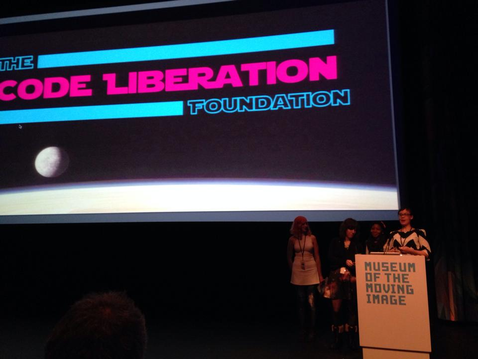
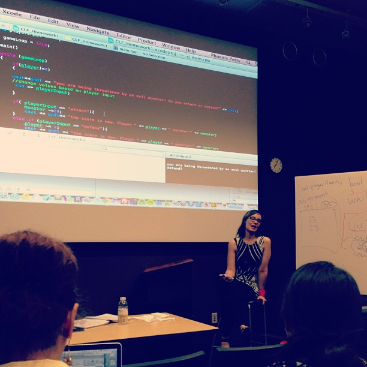
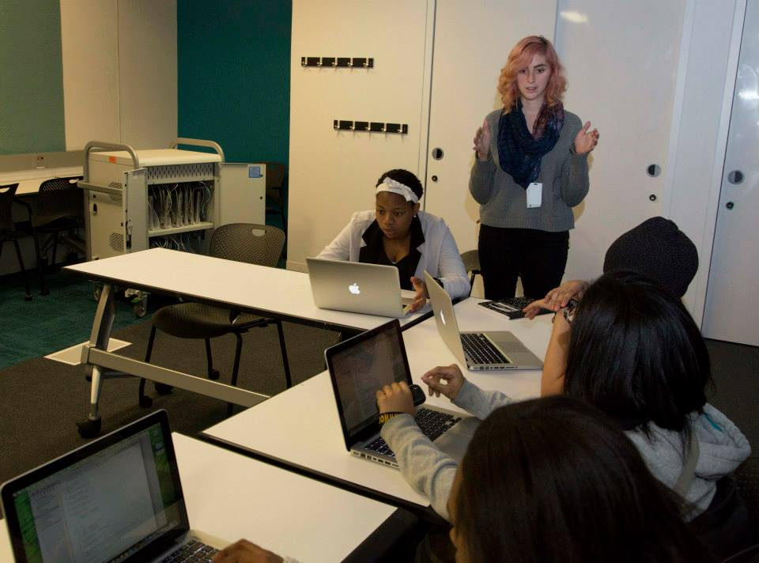
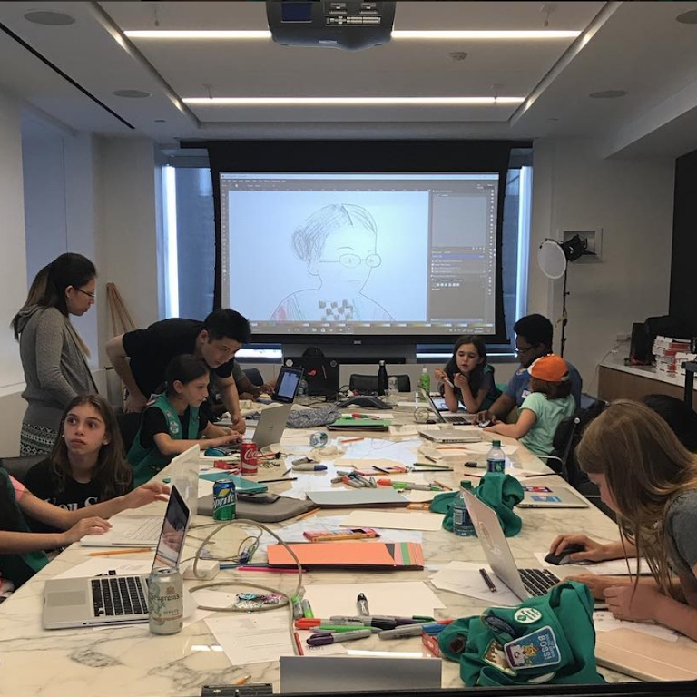
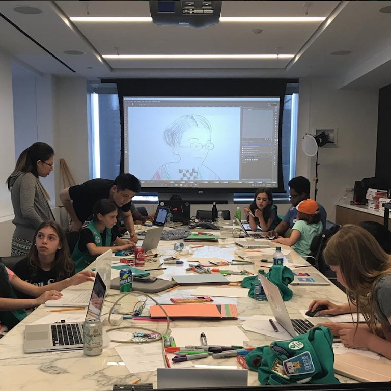
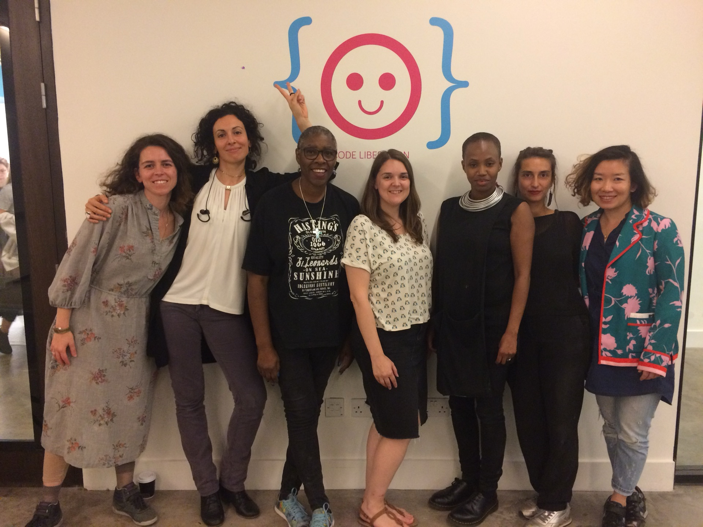

Code Liberation
Code Liberation Foundation is a 501(c)(3) nonprofit I founded on International Women's Day, 2013. We teach women, nonbinary, femme, and girl-identifying people to program through creativity. From free workshops in GameMaker, Unity, and p5.js to weekend game jams, high school outreach programs, and our FutureLearn course, the organization has reached over 6,500 people across New York City, London, and online.
Origins
Programming is political. We are at the beginning of a technological culture, and the structures we establish now will shape the future for generations. The educational system presents programming as something men and boys do, and women, nonbinary, and femme-identifying people are excluded by default. Code Liberation was built to change that.
I put together a team of brilliant women to make this happen: Catt Small, Jane Friedhoff, Nina Freeman, Kay, and Kaira Villanueva. All of us had been interested in programming from a young age, were discouraged before college, and returned to making games. I had the vision for the organization and together we set out to fix the systemic damage that had been done to us and to so many others. We launched on International Women's Day 2013, and within our first year we were running regular workshops at the NYU Polytechnic School of Engineering's MAGNET space in Brooklyn.
Our workshops assumed zero prior knowledge. We taught GameMaker, Unity, HTML, openFrameworks, Processing, and p5.js. These tools were chosen because they let beginners produce something visual, interactive, and personally meaningful within a single session. Learning requires vulnerability, and we created a low-risk, non-competitive atmosphere where it was safe to be a beginner. It was never about how technically good you are. It was about how open you could be during the process.
 Programs and Partnerships
Code Liberation grew through partnerships with organizations that shared our commitment to access and equity. We ran a four-semester outreach program at Brooklyn all-girls high schools in collaboration with NYU Polytechnic, introducing teenage students to creative coding for the first time. A collaboration with Black Girls Code saw 57 young women create their own video games in a single event. The 2015 Women's History Month Game Jam, sponsored by Microsoft and MailChimp and hosted at the Microsoft building in New York, brought together dozens of first-time game makers for a 48-hour competition.
The organization presented workshops and events at major industry venues including PAX, IndieCade, Games for Change, and Two5Six. Our members went on to speak at GDC, A MAZE, TEDx, and many other conferences. Beyond the workshops, we ran speaker series, game nights, and community events that fostered a network of creators who continue to shape the independent games scene today.
 

London
When I joined Goldsmiths, University of London as faculty in 2015, I brought Code Liberation's model to the UK. Between 2017 and 2018, we ran workshops at the V&A Museum, Goldsmiths, and Machines Room in London in partnership with the Processing Foundation. Participants from these workshops exhibited their finished games at Digital Design Weekend and V&A Late events. Some of them went from writing their first line of code to showing work in a public exhibition within weeks. The London programs demonstrated that the model was transferable across institutional and cultural contexts, and led to the development of open teaching resources for p5.js that remain freely available.

Gamergate and Its Aftermath
Then Gamergate happened. Watching women I had personally mentored come under coordinated attack was one of the hardest experiences of my life. These were people I had brought into the community, encouraged to share their work publicly, and supported as they found their voices as creators. To see them targeted with harassment campaigns for doing exactly what we had empowered them to do was devastating.
I stepped back to rethink how to approach this work. But if anything, Gamergate proved the point we had been making all along. Programming and creating technology is an act of future world building. It is deeply powerful, and very powerful forces are vested in keeping the status quo in place. Women and marginalised people taking control of that narrative threatens the establishment. The backlash was not random. It was a reaction to a shift in power that organizations like Code Liberation helped make visible.
Impact
Over its lifetime, Code Liberation has reached over 6,500 people ranging in age from 16 to 70, including through our FutureLearn course that extended our teaching beyond physical workshops. Many alumni have gone on to careers in game development, creative technology, and software engineering. The organization proved that the barriers keeping women and nonbinary people out of programming are structural, not intellectual. Remove those barriers and you see an immediate, visible community of makers. Our indie scene is full of women, queer folk, people of color, and punks who were generally not happy with the state of things in games or who are completely disconnected from triple A games. Technology is not going to liberate us on its own, but what I can do is give people a strong grounding and a way of seeing the world that lets them go out and become changemakers.
Game jam at NYU MAGNET
Introduction to Creative Coding and Games

Founders panel discussion
GDC Education Summit

Presenting Code Liberation
The founding team
Live coding presentation
V&A workshop
Student game on display

Visitor playing a student game
Code Liberation logo with student artwork
What Comes Next
We are presently regrouping and thinking about the future of Code Liberation. If you are interested in getting involved with what comes next, or if you want to collaborate on creative coding education, please get in touch.
Get in Touch